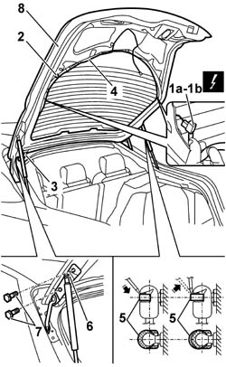

7210E56 TAIL-GATE
- Path
- Procedures > 72 PANELS AND FRAME > 7210 REMOVING REFITTING > 7210E EXTERNAL PARTS > 7210E56 TAIL-GATE
- Kind
- repair procedure (removal / refitting; the operation number is the code)
- Applies to
- all engines; all production periods
- Interactive page
- https://sloeber94.github.io/elrnDB-aGt/en/#/125002031
Applies to: all engines; all production periods
 Removing
Removing
 Refitting
RefittingOp. 7015A04 TAILGATE INTERIOR PANEL - R+R
Op. 5550D16 THIRD STOP LIGHT - R+R
Op. 7015A58 INTERNAL TAILGATE MOULDING (ONE) - R+R
Op. 7015B10 SINGLE TAILGATE LOCK - R+R OR REPAIR WITH PANEL/PROTECTION REMOVED
1. Disconnect electrical connections (1a) and (1b).
Name | Connector | |
|---|---|---|
1a | Heated rear windscreen | See P55A HEATED REAR WINDSCREEN ( CONNECTORS ) |
Name | Connector | |
|---|---|---|
1b | Heated rear windscreen | See P55B HEATED REAR WINDSCREEN ( CONNECTORS ) |
2. Disconnect the wiring retainers.
3. Prise up the tail-gate wiring duct.
4. Extract the wiring from the tailgate, pulling it through the cable duct housing.
5. Support the tailgate and, using a screwdriver, prise off (without detaching) the upper lift device retaining clips.
6. Disconnect the top end of the lift devices.
7. Undo the hinge bolts.
8. Remove the tailgate.

Applies to: all engines; all production periods
Refitting
RemovingCheck that the tailgate and hinges are undamaged.
Check that the wiring is undamaged and that the individual conductors are firmly attached to the connections.
Fit the tailgate.
Tighten the hinge bolts without tightening them.
Connect the top end of the lift devices and fit the retaining clips.
Place the tailgate wiring in its housing and secure using retainers.
Fit the wiring duct.
Connect the electrical connections .
Name | Connector | |
|---|---|---|
- | Heated rear windscreen | See P55A HEATED REAR WINDSCREEN ( CONNECTORS ) |
Name | Connector | |
|---|---|---|
- | Heated rear windscreen | See P55B HEATED REAR WINDSCREEN ( CONNECTORS ) |
Op. 7015B10 SINGLE TAILGATE LOCK - R+R OR REPAIR WITH PANEL/PROTECTION REMOVED
Op. 7015A58 INTERNAL TAILGATE MOULDING (ONE) - R+R
Op. 5550D16 THIRD STOP LIGHT - R+R
Op. 7015A04 TAILGATE INTERIOR PANEL - R+R
Op. 7015A14 TAILGATE - ADJUST CENTRING AND PROFILE - INCLUDES HINGE AND COMPARTMENT SEAL ADAPTATION
Retouch the heads of the tailgate hinge fixing bolts with paint.
Topics linked from this page (5)
- 5550D16 THIRD STOP LIGHT - R+R
- 7015A04 TAILGATE INTERIOR PANEL - R+R
- 7015A14 TAILGATE - ADJUST CENTRING AND PROFILE - INCLUDES HINGE AND COMPARTMENT SEAL ADAPTATION
- 7015A58 INTERNAL TAILGATE MOULDING (ONE) - R+R
- 7015B10 SINGLE TAILGATE LOCK - R+R OR REPAIR WITH PANEL/PROTECTION REMOVED